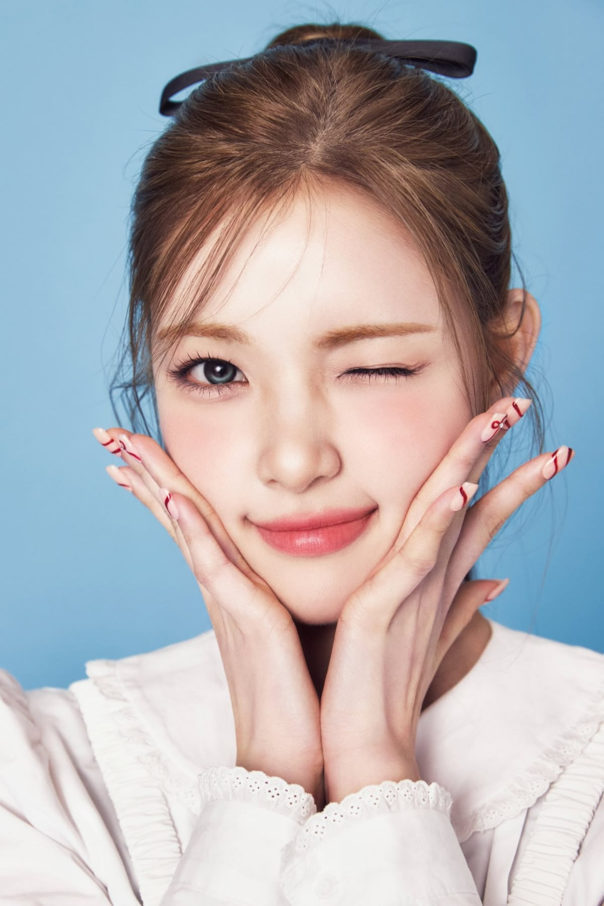
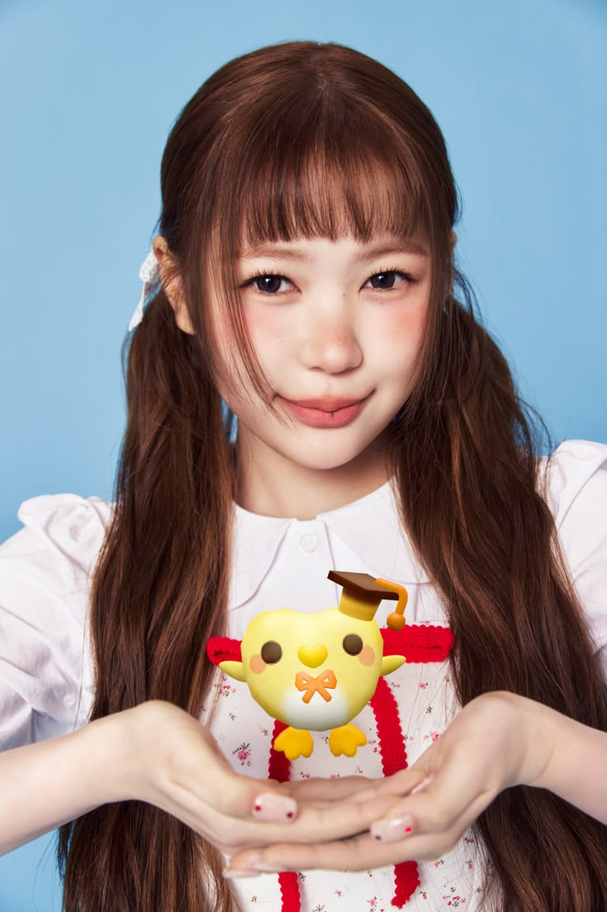

| Photos |
Description |
|
Jiwoo
- Nama Asli: Choi Ji-woo
- Nama Panggung: Jiwoo
- Posisi: Leader, Dancer, Visual
- Tanggal Lahir: Seoul, 7 September 2006
- Umur: 19 tahun
- Tinggi Badan: 170 cm
- MBTI: ISTJ
- Kewarganegaraan: Korea Selatan
|
|
Carmen
- Nama Asli: Nyoman Ayu Carmenita
- Nama Panggung: Carmen
- Posisi: Vokalis
- Tanggal Lahir: Denpasar, 28 Maret 2006
- Umur: 20 tahun
- MBTI: INFP
- Kewarganegaraan: Indonesia
|
 |
Yuha
- Nama Asli: Yu Ha-ram
- Nama Panggung: Yuha
- Posisi: Vokalis, dancer
- Tanggal Lahir: Wonju, Gangwon-do, 12 April 2007
- Umur: 18 tahun
- MBTI: INTJ
- Kewarganegaraan: Korea Selatan
|
|
Stella
- Nama Asli: Kim Da Hyun
- Nama Panggung: Stella
- Posisi: Vokalis
- Tanggal Lahir: Vancouver, British Columbia, Canada, 18 Juni 2007
- Umur: 18 tahun
- MBTI: ENTP
- Kewarganegaraan: Korea - Kanada
|
|
Juun
- Nama Asli: Kim Ju Eun
- Nama Panggung: Juun
- Posisi: Main dancer
- Tanggal Lahir: Ilsan, Gyeonggi-do, 3 Desember 2008
- Umur: 17 tahun
- MBTI: ISTJ
- Kewarganegaraan: Korea
|
|
A-na
- Nama Asli: Roh Yu-na
- Nama Panggung: A-na
- Posisi: Visual
- Tanggal Lahir: Suwon, Gyeonggi-do, 20 Desember 2008
- Umur: 17 tahun
- MBTI: INFJ
- Kewarganegaraan: Korea Selatan
|
|
Ian
- Nama Asli: Jeong Lee-an
- Nama Panggung: Ian
- Posisi: Visual, center
- Tanggal Lahir: Jongno-gu, Seoul, 9 Oktober 2009
- Umur: 16 tahun
- MBTI: ENFP
- Kewarganegaraan: Korea Selatan
|
 |
Ye-on
- Nama Asli: Kim Na-yeon
- Nama Panggung: Ye-on
- Posisi: Vokalis dan maknae
- Tanggal Lahir: Yangsan, Gyeongsangnam-do, 19 April 2010
- Umur: 15 tahun
- Tinggi Badan: 166 cm
- MBTI: ISTJ
- Kewarganegaraan: Korea Selatan
|